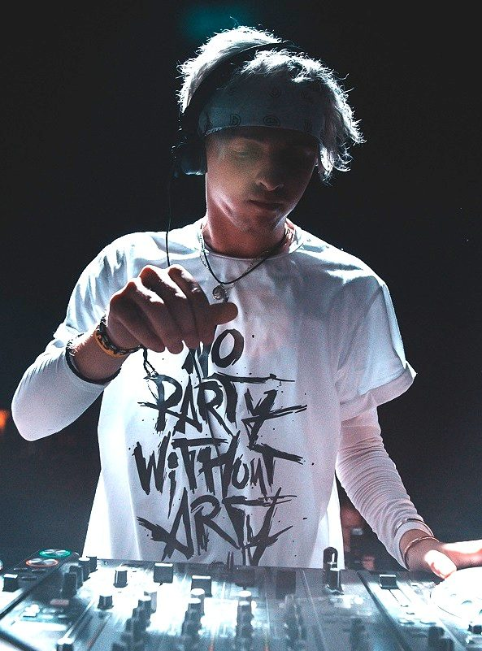

Arty: "2013 will be my year of big things"


.jpg){kind=link}
Arty’s mainstage performance at Ultra Music Festival during Miami Music Week earlier this month is as good an indication of anything how far the Russian production prodigy has accelerated to headline status in recent year.
From the lush, melodic and utterly unique progressive trance masterpieces like Hope and Rush that defined his early career, and saw him joining the Anjunabeats stable early in the game, Arty has evolved his sound and fused it with a main-room house sensibility that’s earned him props from the likes of Axwell, leading to vocal stormers like his recent smash Together We Are.
Still, his work with Paul van Dyk last year on his Evolution album, as well as his recent collaboration with Armin van Buuren Nehalennia, which graced the brand-new A State of Trance 2013 compilation, shows his skills are in high demand from the scene’s trance titans, and he’s hardly said goodbye to the sound. Meanwhile, his smash last year Must Be the Love that saw him partnering with BT and Nadia Ali, as well as his turbo-charged remix of Zedd’s Clarity, show that he’s far from lost that original charge in the studio.
He’s now in Australia for a series of gigs with fellow next-generation producer Mat Zo; it’s a fitting pairing for the tour, as they’ve already actually worked in the studio together on the massive brainbending Rebound and Mozart singles. While he was in Miami, Arty told inthemix why 2013 will see him step it up again.
Hi Arty, hope you’re well. How has the start to your year been?
It’s been amazing man, I got back on the road in, like, January and have loved every minute of it. It makes you feel alive again.
In Miami, you’re in town along with a large chunk of the dance industry. How has it been, gigs and otherwise?
I always love Miami because you are playing to crowds that are here for the love of dance music. As you say, a large amount of the industry is here so time off the stage is great as well. You can have really interesting chats with people.
A Main Stage performance at Ultra Music Festival was obviously on the agenda too. How was that?
Fun, yeah, as I say the Miami crowd is also so nice to play to, as they are receptive. What I really took from it was a true excitement for the year to come. This is another year of the enormous festivals and I’m so pleased to be a part of some of them.
You mentioned that you had finished something for Miami specifically. Tell us a bit about that, when we might see it released, and what else do you have coming up?
Ah, I don’t want to give too much away, man! All I can say is that 2013 is going to be a year of big things. It has started with such a bang that to build and build is an incredible prospect.
Talking about your presence as a producer; one of the mainstays of your production is original ideas, which has been a defining element since your early days. These are harder to come by in dance music than you might think – where do you draw your inspiration?
You can find inspiration anywhere and in the strangest places. If you’re spending a lot of time in airport lobbies, cafes and other such places on the road then you have to learn to harness anything that comes your way. The people I meet, the places I go are all part of it, but it’s those little moments when you have total clarity you need to hold onto.
Early in your career you earned a lot of attention as one of the standout producers in the trance genre; though you’ve broadened your sound a lot the past year or so, merging trance and bigroom house in a lot of ways. Where do you place your sound now personally?
I think the key thing is not to place yourself anywhere. The second you put yourself in a bracket, inspiration gets that bit harder to come by. My music tastes change day to day, as do my personal likes and dislikes. It’s a fact of life. So I can open my soundboard one day and it’s completely different what comes out from Monday to Tuesday to Wednesday and so on.
You’ve had a strong relationship with Anjunabeats since the early days, though since you’ve also been releasing on Axwell’s Axtone stable, Armin’s Armind label, Big Beat Records. What are your future plans, in terms of who you’ll partner with for your music?
There are things in the works. But at the moment, I am so honoured to have worked with who I have and who I continue to do so that if things stay the same, I am happy. Of course there are always people you have in mind, and those dream collaborations, but Armin and Axwell were always a part of that growing up. To be honest, I am so fortunate.
Must Be The Love with Nadia Ali was a huge tune last year, but Together We Are seems even more built for mainstage domination. Do you approach these sort of collaborations a little differently; are you aiming to take your sound to a wider audience?
I think aiming for that big sound can stifle some creativity. Never give up on getting a record as big as it can be – that is what I took from Together We Are. It was a journey getting it to what I saw as complete. If you’re willing to put the effort in and not give up on something you believe in, you will get that wide recognition.
Your track with Armin Nehalennia was also a rather large track, definitely more on the uplifting trance tip. When did you guys decide you’d enter the studio together, and how did the track come together?
It was a very natural coming together and then we would take bits away to add our own spin. Armin is such a hard worker, he was always hitting me up like, ‘Arty, how’s it coming along?!’ And I really thrived on the pressure and also producing something with a true master.
Your Australian tour is alongside Mat Zo. He’s a seriously talented next-gen producer who’s you’ve got a lot in common with, and you’ve collaborated a few times. Is he someone you feel you have a lot in common with?
Definitely, man, I feel like we have a very similar ethos. It’s going to be fun and especially to be in Australia! I haven’t been this excited for a set of shows in a long time.
And what can we expect from your current sets, including the set of dates in Australia?
I will definitely be bringing it big. Every show will have their own little surprises thrown in, I just can’t wait to see how the crowd are going to respond.
Arty and Mat Zo Australian tour dates:
Sydney – Home – 28th March (Good Friday Eve)
Adelaide – HQ Complex – 29th March (Good Friday)
Brisbane – Family – 30th March (Easter Saturday)
Melbourne – Billboard – 31st March (Easter Sunday) – With MaRLo